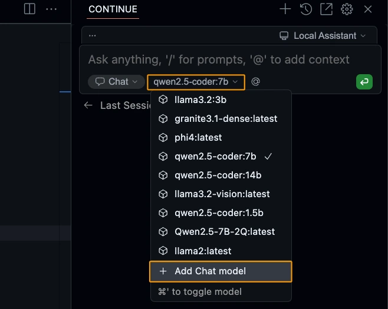
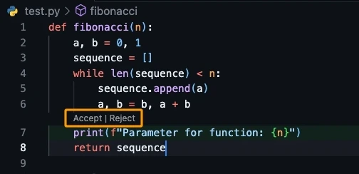
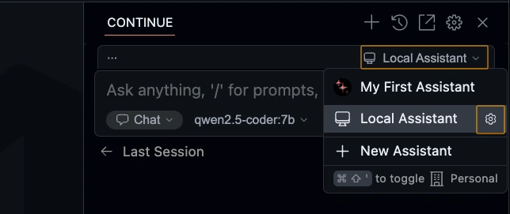
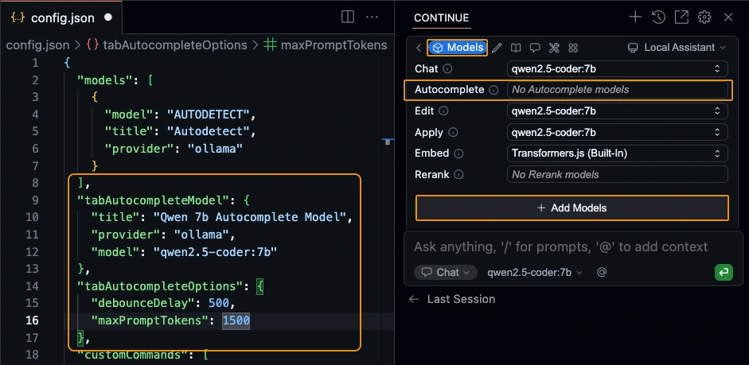

🦙Ollama + Continue = 🧡
안녕하세요, PETER입니다.👋
아시는 분들은 이미 아시는 내용일 수 있겠지만, 무료로 Offline AI 코딩 방법에 대해 두 Part에 걸쳐 나눠보려 합니다. Cursor AI나 Copilot과 같은 AI코딩을 사용하기에는 구독료가 부담스러우셨던 분들께도 좋은 소식이길 바랍니다.이제 우리는 코딩을 하기 위해서 비행기 안에서 와이파이 결재를 할 필요도 없고, 인터넷이 안되는 곳에서도 전기⚡️만 있다면 AI와 함께 코딩을 계속할 수 있게 되니 너무 좋은 세상이네요.😭 본론으로 들어가 볼게요!🤟
1. Ollama🦙 사용하기
- Ollama🦙는 무료로 Local PC에서 LLM을 직접 실행할 수 있게 해주는 OpenSource Project입니다.🫰 링크를 따라들어가신 뒤에 자신의 OS에 맞게 Ollama를 설치해주세요. Click Download!
ollama run
이번에는
ollama run명령어를 사용해서 LLM 모델을 다운로드 받고 실행하는 방법을 알아볼게요! 아래와 같이 ollama에서 Models 탭을 클릭해보세요. 이곳에서 당신은 ollama를 통해 다운받을 수 있는 Model을 확인할 수 있습니다. :) 빠른 실습을 위해 조금만 아래로 내리면 찾을 수 있는llama3.2를 클릭해봅니다!아래와 같이, 좌측 상단의 dropdown을 클릭하면 기본적으로 해당 모델에서 제공되는 버전을 확인할 수 있고, 특정 버전을 클릭하면 우측에 다운받고 실행해볼 수 있는 ollama 명령어를 확인할 수 있어요. 3b를 클릭해봅니다. 그러면 우측 겹쳐진 네모 박스를 클릭해서 복사하셔서 붙여넣으셔도 좋고,
ollama run llama3.2:3b를 터미널에 직접 입력해보세요!그렇다면 아래와 같이 모델 다운로드가 실행되고.. 대화할 수 있는 창이 실행될 거에요!

아래와 같이 간단한 질문을 해보세요! :) 좀 이상하게 대답을 할 수는 있지만 인터넷이 없는 곳에서도 내 PC에서 LLM과 대화를 할 수 있다는 것을 확인하실 수 있을거에요.🤗
축하합니다! 🥳🍾🎉 이것으로 당신은 인터넷이 없어도 대화할 수 있는, Offline LLM 실행에 성공하셨습니다!ㅎㅎ 너무 쉽죠? ㅎㅎㅎ 대화를 그만하고 싶다면
/bye를 입력하시면 됩니다!
ollama list
설치가 끝나셨다면, Linux나 Mac의 경우 Terminal/Bash, Window는 Powershell 창을 열어주세요! 그리고 아래와 같이
ollama ls혹은ollama list를 실행해주세요. 현재 Ollama로 실행할 수 있는 모델들을 확인하실 수 있습니다!bash - bash
(base) PETER 🪵 ollama list
NAME ID SIZE MODIFIED
llama3.2:3b a80c4f17acd5 2.0 GB 3 days ago
ollama rm
ollama의 다운받은 모델을 지우고 싶다면,
ollama rm model_name:tag를 사용하시면 됩니다.🙂 llama3.2로 간단한 실습은 끝났으니 저는 아래 명령어로 모델을 지워버릴게요.😁bash - bash
(base) PETER 🪵 ollama rm llama3.2:3b
deleted 'llama3.2:3b'그 외에 다른 명령어들도 알고 싶으시다면,
ollama라고만 입력해보세요! 더 많은 명령어들을 보실 수 있습니다.😉
2. Continue 설치 & 설정하기
2.1. Continue Extension 설치 🧑🏻💻
자, 이제 다(?) 왔습니다! Continue라는 Extension만 설치하고, Ollama와 연결만하면 됩니다 :)! Continue는 VSCode Extension 혹은 JetBrains의 Plugin으로 설치할 수 있는데요! ‘continue’라고 검색하셔서 나오는 extension / plugin을 설치해주세요.🤗
VSCode extension 설치JetBrains plugin 설치설치가 끝났다면, 아래 .gif처럼 VSCode의 경우 Activity Bar에 Continue Icon이 생성됐을 거에요. 그걸 Drag & Drop으로 우측으로 이동하면 우측에 고정시킬 수도 있어요! 저도 이렇게 사용 중입니다.

2.2. coder llm 다운받기 📥
coding 특화 llm을 다운받아 봅시다! 위에서 했던 방법과 똑같이 Ollama models에 들어가 아래와 같이 qwen2.5-coder:1.5b 모델을 확인하시고 ollama run 명령어로 다운받아 주세요! 물론 PC 사양이 좋으신 분들은 7b나 14b 추천드립니다 :)
2.3. ollama🦙 연결하기
자, 이제 드디어 Ollama와 연결해보겠습니다. VSCode를 사용 중인 Mac이라면
Cmd + l, Windows라면Ctrl + l을 입력해보세요! IntellJ를 사용하고 계신다면Cmd + j, Windows라면Ctrl + J를 눌러주세요! 그러면 아래와 같이 채팅 창이 뜰 거에요!여기서 Dropdown을 내리시고 아래와 같이
+ Add Chat model을 클릭해주세요. Dropdown을 내렸을 때 모습은 캡쳐한 제 내용과 다를 거에요! 저는 이미 연동이 돼있어서 그렇습니다..!😗 그 다음에는 OpenAI로 선택되어 있는 Provider를 귀여운 Ollama로 바꿔서 클릭해줍니다.
아래 Model 칸은
Autodetect로 설정해주시면 됩니다. Autodetect로 설정이 되어있다면 그대로 두시면 돼요! 그 다음,Connect를 클릭해주세요!
아래와 같이 config.json이 갑자기 나타나면서 provider가 ollama로 설정된 AUTODETECT를 확인하셨다면 제대로 설정이 된 것입니다! config.json은 닫으셔도 됩니다.
그 다음 다시 채팅창을 열어보시고
Autodetect - qwen2.5-coder:1.5b가 잘 뜨는지 확인해보세요! 확인이 되셨다면 클릭해서 모델을 선택해주세요 :)!
3. 🧑🏻💻 Continue와 코딩해보기
지금부터 진행할 내용들은 사용하는 PC의 사양과 사용하는 모델의 크기에 따라 응답속도가 다를 수 있으니 참고해주세요! 😼
자, 그럼 이제 본격적으로 Continue를 통해 Ollama AI와 함께 코딩 실습을 해볼게요! 편하신 곳에 아래와 같이 test.py(혹은 test.java) 파일을 만드시고,
Ctrl + l/Cmd + l을 눌러서 아래와 같이 실습 준비를 해주세요! IntelliJ는Ctrl + j/Cmd + j를 눌러주세요! 저는 Python으로 해볼게요 :)아래와 같이 ‘피보나치 수열 python 코딩’이라고 입력하고 엔터를 쳐보세요! 잠시 기다리시면, 답변을 얻을 수 있을 거에요 :) 아래 이미지의
Click!이라고 적은 버튼을 누르면, 현재 커서가 위치한 곳에 답변으로 나온 코드가 바로 붙여넣기 될 거에요!물론 바로 옆 버튼을 눌러서 전체 코드 복사 후, 원하는 위치에 붙여넣을 수도 있고, 일부분만 마우스로 Drag해서 복사 & 붙여넣기할 수도 있어요. :)
✍️ 코드 수정 부탁해보기
이제 생성해서 붙여넣은 Fibonacci 코드에 아래와 같이 함수가 실행될 때 마다, 들어온 숫자를 확인할 수 있게 코드를 수정하고 싶다고 가정해봅시다. 이 때, 수정하고 싶은 부분을 아래와 같이 Drag를 하고 `Ctrl+l` or `Cmd + l`을 누르면 해당 코드를 LLM에게 Context로 전달해서 질문을 할 수 있어요 :)
자, 이제 아래와 같이 잘 수정해준 코드를 실제 내 코드에 적용을 해봐야겠죠?
Apply버튼을 눌려줍니다.Apply 버튼을 눌렀다면 Continue가 똑똑하게 위에서부터 코드를 내려가며 수정이 필요한 알맞은 곳을 찾아 수정을 해주는데요(PC 사양과 사용하는 모델의 크기에 따라 시간이 꽤 걸리기도 해요.), 수정 내용이 마음에 드신다면 Accept을, 마음에 들지 않는다면 Reject을 클릭해주시면 됩니다. :)

📨 파일 참조시키기!
- 마지막으로, 특정 파일을 태그해서 질문을 해볼게요! 우리가 채팅어플에서 누군가를 소환할 때 사용하는,
@를 똑같이 사용하면 아래와 같이 원하는 파일을 LLM에게 인식시킨 상태로 질문을 할 수 있어요! - 그럼 아래와 같이 해당 코드를 제대로 파악했을 때만 대답할 수 있는 답변을 확인해 볼 수 있습니다. :)
🌷 AI Assistant의 꽃, Autocomplete 사용하기
자 이제 마지막으로, AI Assistant 사용의 가장 큰 혜택이라 볼 수 있는 코드 자동완성기능을 사용해보도록 하겠습니다.😎
Continue의 환경설정을 하는
config.json파일을 여는 방법은 두 가지가 있는데요, 첫 번째는 아래와 같이 채팅창 UI에서 ‘Local Config’라고 써져있는 것을 클릭하면 나오는 메뉴에 마우스를 가져가면 톱니바퀴 모양 아이콘이 나옵니다. 클릭해주세요. 두 번째는 ‘Local Config’ 위에 보면 나와있는 톱니바퀴 아이콘을 클릭하시면 나오는 화면에서
Configuration영역을 보시면 ‘Open Config File’이라고 써져있는 버튼이 보이실 거에요. 그 버튼을 눌러줍니다. :) 아래와 같이 ‘Model Roles’ 메뉴의 ‘Autocomplete’부분이 비활성화 되어있을텐데요, 이걸 이제 활성화 시켜볼 거에요. 그렇다면 위와같이
config.json파일이 나옵니다. 맨 위에 나오는 “models”로 시작하는 코드 다음에, 아래와 같이 “tabAutocompleteModel” 코드를 추가해줍니다.🤗 혹시 코드 추가 후에 저장하면 에러가 나시는 분들은 추가한 코드 위아래에,(쉼표)를 추가했는지 확인해주세요!😉config.json - json
{
"models": [
{
"model": "AUTODETECT",
"title": "Autodetect",
"provider": "ollama"
}
],
"tabAutocompleteModel": {
"title": "Qwen 1.5b Autocomplete Model",
"provider": "ollama",
"model": "qwen2.5-coder:1.5b"
},
"tabAutocompleteOptions": {
"debounceDelay": 500,
"maxPromptTokens": 1500
},
"customCommands": [
...자, 그럼 Autocomplete이 잘 되는지 확인해볼까요? 아래와 같이 테스트하던 test.py로 와서 ‘# 피보나치 함수 n=10과 n=5의 합을 출력하는 함수’라고 주석을 쓴 뒤, 엔터를 하고 기다려 보면 음영처리된 자동완성된 코드가 보일거에요.😎
tab키를 입력해보세요! 보이는 모든 코드가 입력됩니다. :)만약 음영으로 자동완성된 모든 코드를 입력하지 않고, 토큰 단위로 하나하나 입력해나가고 싶다면 아래 이미지에서 보이는 것처럼
CmdorCtrl을 누르시고 ➡️(오른쪽 화살표)를 입력하시면 하나씩 코드를 반영할 수도 있습니다. :)
P.S.
아래 두 가지를 참고하시면 좋을 것 같아 적어봅니다. :)
- 혹시나 아래와 같이 질문에 대답이 빨리 나오지않고 너무 오래걸리거나 잘 안된다면,😿 VSCode를 껏다 켜보거나 Ollama를 재시작해보세요!
- Code Assistant에 특화된 모델들이 어떤 것들이 있는지, 요즘은 어떤 모델이 잘 나가는지 궁금하실 수 있어요. 저 같은 경우 huggingface의 bigcode-model-leaderboard와 같은 곳을 보고있어요. 참고해주세요!
그럼, Happy Coding!🤗
- 여기까지 ollama를 소개하고, Ollama와 continue를 이용해서 로컬에서 LLM을 Offline에서도 Code Assistant로 사용하는 방법에 대해 알아봤습니다! 🤗 Part. 2에서는 Huggingface에서 모델을 다운받고, Ollama로 커스텀 설정하여 사용하는 방법(약간의 Prompt Engieering 포함)과 무료는 아니지만 Continue에서 아주 가성비 좋은 Code Assistant Provider인 Together.ai를 연동하는 방법에 대해 알아볼게요!😉
- 혹시나 잘못 기입된 내용이 있거나 수정이 필요한 부분은 댓글로 알려주시면 감사하겠습니다!
읽어주셔서 감사합니다!🙇🏻♂️
References